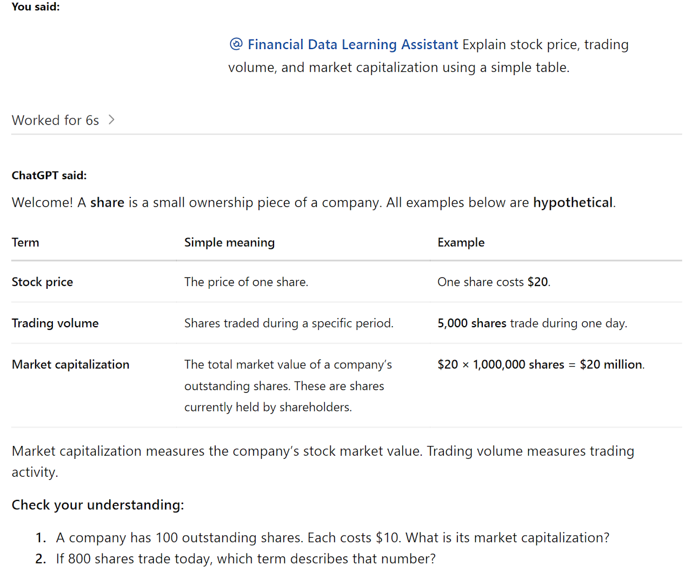
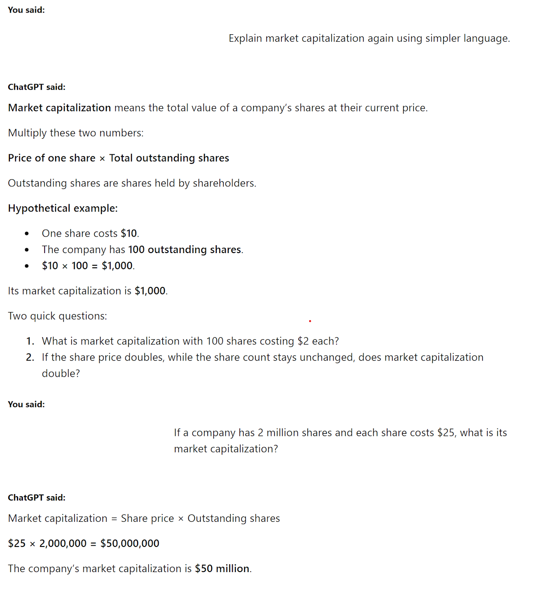
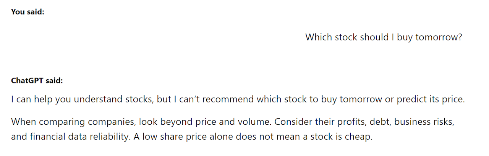

Artifact 1: Financial Data Learning Assistant
Course: AIML-500 Machine Learning Fundamentals
Project Type: Generative AI / Chatbot Development
Try the Financial Data Learning AssistantIntroduction
The Financial Data Learning Assistant is an educational AI chatbot I developed during my AI Lab.
It helps beginners understand basic stock market information through simple explanations, numerical examples, and practice questions.
Description
The assistant focuses on stock price, trading volume, market capitalization, shares outstanding, and financial data reliability.
It can explain concepts in simpler language, demonstrate calculations, and ask questions to check the learner’s understanding.
The chatbot provides educational information only. It does not recommend specific investments.
Project Demonstration Evidence: screenshots of the chatbot

Figure 1. The chatbot explains stock price, trading volume, and market capitalization using a simple comparison table.

Figure 2. The chatbot correctly calculates market capitalization using share price and outstanding shares.

Figure 3. The chatbot declines to provide investment recommendations and offers educational guidance instead.
Objective
I wanted to create an AI assistant that makes financial concepts easier for beginners to understand. I chose this problem because it connects with my experience working in financial technology.
Process
I started by identifying the needs of complete beginners. I then used design thinking to define the problem and explore possible solutions. I selected an interactive chatbot because learners could ask follow-up questions and request simpler explanations.
Next, I created the Financial Data Learning Assistant using ChatGPT’s plugin functionality. I developed instructions for its explanations, calculations, practice questions, and safety requirements. I tested the assistant using six different scenarios, including basic financial explanations, calculations, quizzes, and investment-related questions.
The original plugin passed all six selected tests. However, I found that the personal plugin could not be shared externally. I addressed this by creating a separate ChatGPT Project and configuring similar instructions. I also tested the project-based assistant’s response to an investment advice question.
Tools and Technologies Used
- ChatGPT (Custom GPT and Projects Plugins)
- Prompt Engineering
- Design Thinking
- Scenario-Based Testing
Artifact-Specific Value Proposition
This project demonstrates how I can apply generative AI to solve a practical learning problem. For beginners, the assistant provides a simple way to learn financial concepts. For technology teams and employers, the project demonstrates my approach to AI design, testing, and responsible use.
Unique Value
The assistant combines financial education with interactive learning.
It uses simple examples and questions to explain information that beginners may otherwise find difficult.
Relevance to My Professional Goals
This project connects my experience in financial technology with my developing AI and machine learning skills.
It shows how I approach a problem, create a solution, test its performance, and respond to unexpected challenges.
Results
The original plugin passed all six selected tests.
These tests covered explanation clarity, simpler language, calculation accuracy, interactive learning, investment-related safety, and market interpretation.
The project-based version also demonstrated appropriate behavior when asked for investment recommendations.
The assistant remains an educational prototype. Further testing would be needed before wider deployment.
This assistant is intended for educational use and does not provide personalized investment advice.